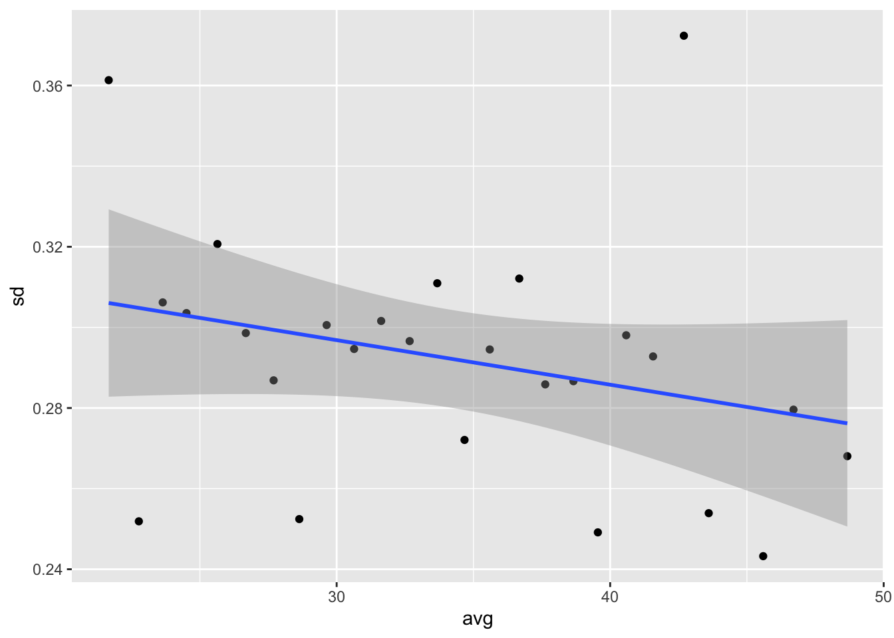
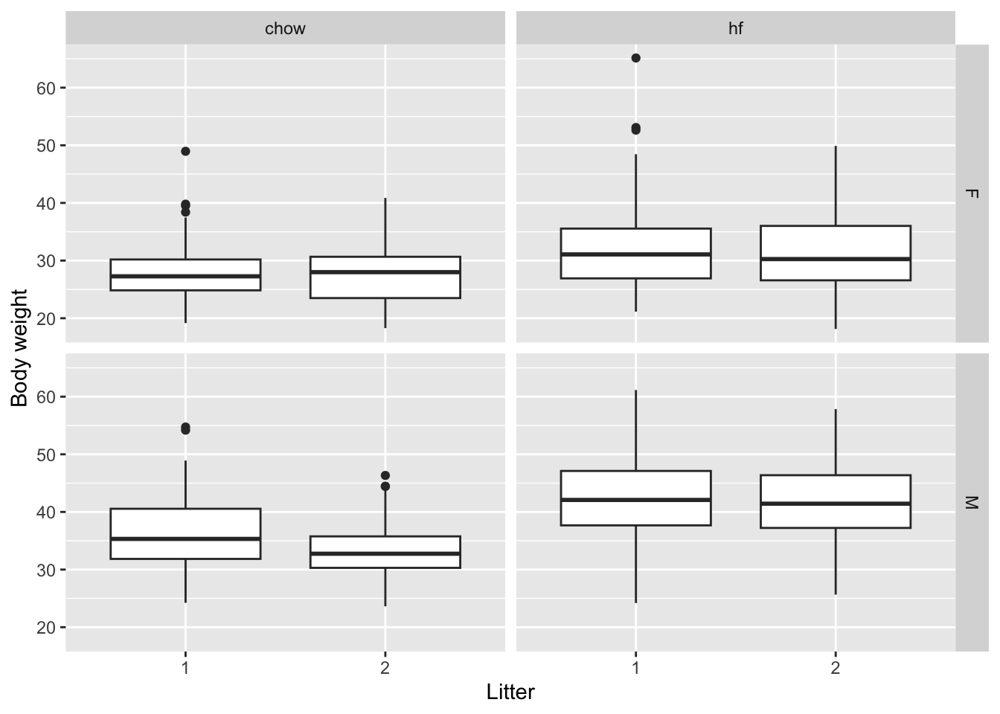
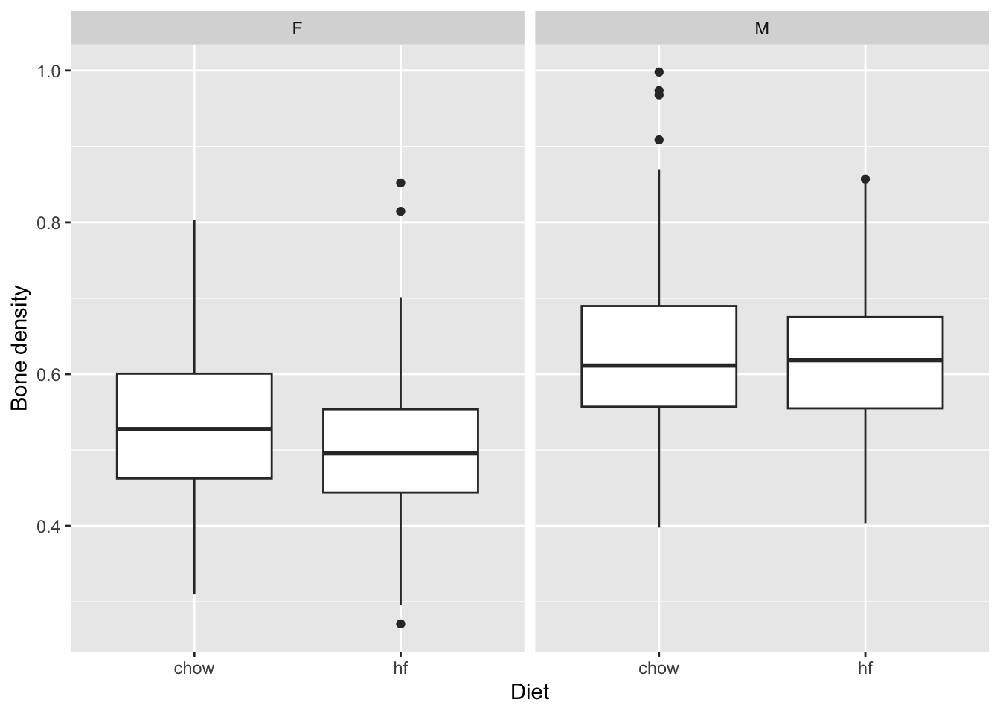

library(dslabs)
library(dplyr)
library(ggplot2)
#data(mice_weights)BST 260 Problem set 7: Topics in linear models
Q1
fit1 <- lm(body_weight ~ diet, data = mice_weights)
fit2 <- lm(body_weight ~ diet + sex, data = mice_weights)
summary(fit1)$sigma[1] 7.658293summary(fit2)$sigma[1] 6.251792The two estimates are not the same because accounting for sex will explain additional variation in body weight that was previously included in the residuals. Thus, the model has smaller estimated residual standard deviation.
Q2
# categorized by weights
dat <- mice_weights
breaks <- with(dat, seq(min(body_weight), max(body_weight), 1))
dat <- mutate(dat, group = cut(body_weight, breaks, include.lowest = TRUE))
#calculate mean and std.
summ <- dat |>
group_by(group) |>
summarize(n = n(), avg = mean(body_weight), sd = sd(body_weight)) |>
filter(n > 10)
summ# A tibble: 26 × 4
group n avg sd
<fct> <int> <dbl> <dbl>
1 (21.1,22.1] 17 21.7 0.361
2 (22.1,23.1] 15 22.8 0.252
3 (23.1,24.1] 23 23.6 0.306
4 (24.1,25.1] 26 24.5 0.304
5 (25.1,26.1] 28 25.6 0.321
6 (26.1,27.1] 34 26.7 0.299
7 (27.1,28.1] 37 27.7 0.287
8 (28.1,29.1] 41 28.6 0.252
9 (29.1,30.1] 44 29.6 0.301
10 (30.1,31.1] 45 30.6 0.295
# ℹ 16 more rows# graph check if std changed by avg
ggplot(summ, aes(avg, sd)) + geom_point() + geom_smooth(method = "lm")`geom_smooth()` using formula = 'y ~ x'
Within 1-gram body weight bins containing more than 10 mice, the standard deviation range from approximately 0.25 to 0.36 with no clear trend as average weight increases, so the constant-variance assumption appears correct.
Q3
mice_weights |>
ggplot(aes(x = factor(litter), y = body_weight)) +
geom_boxplot() +
facet_grid(sex ~ diet) +
labs(x = "Litter", y = "Body weight")
Q4
fit <- lm(body_weight ~ sex + diet + litter, data = mice_weights)
summary(fit)$coefficients["litter2", ] Estimate Std. Error t value Pr(>|t|)
-1.238290224 0.453021677 -2.733401702 0.006411113 anova(fit)Analysis of Variance Table
Response: body_weight
Df Sum Sq Mean Sq F value Pr(>F)
sex 1 15165.4 15165.4 391.2434 < 2.2e-16 ***
diet 1 5238.3 5238.3 135.1406 < 2.2e-16 ***
litter 1 289.6 289.6 7.4715 0.006411 **
Residuals 776 30079.4 38.8
---
Signif. codes: 0 '***' 0.001 '**' 0.01 '*' 0.05 '.' 0.1 ' ' 1After adjusting for sex and diet, there is a statistically significant but small litter effect: mice from litter 2 weigh on average 1.24 g less than those from litter 1 (p = 0.0064). In the ANOVA table, litter explains only about 0.6% of the total variability in body weight, compared with about 29.9% for sex and 10.3% for diet, so litter is a much smaller proportion of the total variation than sex or diet.
Q5
mice_weights |>
filter(!is.na(bone_density)) |>
ggplot(aes(x = diet, y = bone_density)) +
geom_boxplot() +
facet_wrap(~ sex) +
labs(x = "Diet", y = "Bone density")
Among females, mice on the high-fat diet have visibly lower bone density than those on chow (median about 0.50 vs 0.53), while the difference between diets appears much smaller among males, with substantial overlap between distributions. This suggests the diet effect on bone density is present in females but not clearly in males. Males also have higher bone density overall.
Q6
dat <- mice_weights |> filter(!is.na(bone_density))
fit_f <- lm(bone_density ~ diet, data = filter(dat, sex == "F"))
fit_m <- lm(bone_density ~ diet, data = filter(dat, sex == "M"))
summary(fit_f)$coefficients Estimate Std. Error t value Pr(>|t|)
(Intercept) 0.53436672 0.006807310 78.498960 4.408652e-243
diethf -0.03182667 0.009663571 -3.293469 1.078810e-03summary(fit_m)$coefficients Estimate Std. Error t value Pr(>|t|)
(Intercept) 0.6294045 0.007255339 86.750524 3.421245e-251
diethf -0.0124758 0.010384640 -1.201371 2.303616e-01fit_int <- lm(bone_density ~ sex * diet, data = dat)
summary(fit_int)$coefficients Estimate Std. Error t value Pr(>|t|)
(Intercept) 0.53436672 0.006974601 76.616094 0.000000e+00
sexM 0.09503776 0.009939548 9.561578 1.509287e-20
diethf -0.03182667 0.009901056 -3.214472 1.361186e-03
sexM:diethf 0.01935087 0.014169324 1.365688 1.724348e-01fit_sep <- lm(bone_density ~ sex + diet:sex, data = dat)
summary(fit_sep)$coefficients Estimate Std. Error t value Pr(>|t|)
(Intercept) 0.53436672 0.006974601 76.616094 0.000000e+00
sexM 0.09503776 0.009939548 9.561578 1.509287e-20
sexF:diethf -0.03182667 0.009901056 -3.214472 1.361186e-03
sexM:diethf -0.01247580 0.010136016 -1.230839 2.187580e-01When fit by sex, the high-fat diet has a statistically significant negative effect on bone density in females (estimate -0.032, p = 0.001) but not in males (estimate -0.012, p = 0.23). However, the interaction term for the full model is not significant (estimate 0.019, p = 0.17). This is because a significant effect in one group and a non-significant effect in another do not imply a significant difference between the two effects. The estimated difference is not large enough relative to its standard error to be statistically significant so there is a lack of evidence the diet has difference between sexes.